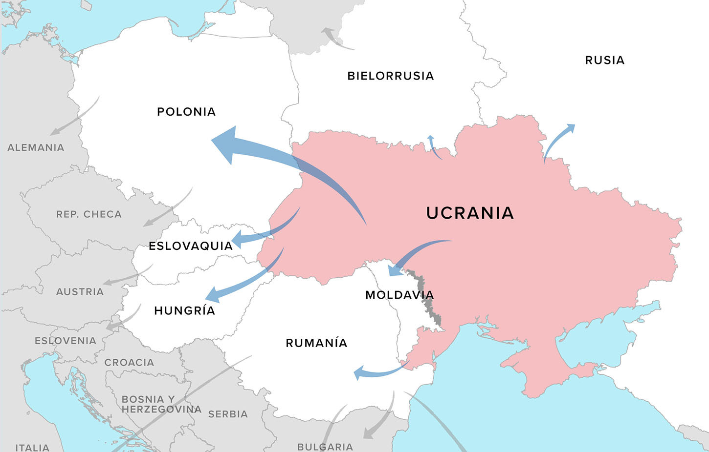

Guerra Ucrania
La guerra en Ucrania cumple este miércoles seis meses, 182 días en los que Rusia no ha conseguido grandes logros en el país. De hecho, la ofensiva lleva semanas estancada en la región de Donetsk, mientras Ucrania se perpara para una contraofensiva
Precisamente, el presidente ucraniano, Volodímir Zelenski, aseguró el martes estar dispuesto a retomar Crimea en cualquier momento, una zona en la que Rusia recientemente reconoció sabotajes por primera vez desde su toma en 2014.